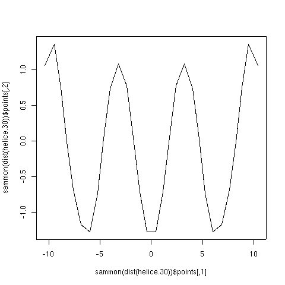
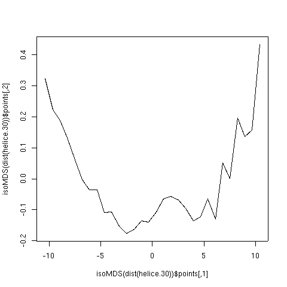
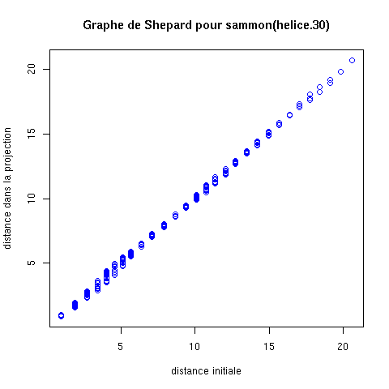
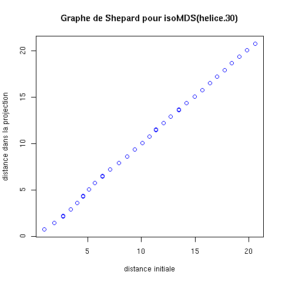

L'objectif est de mettre en pratique ce qui a été vu en cours
concernant la réduction de dimension d'un jeu de données. On commence
en traitant brièvement l'analyse en composantes principales ; on
continue avec la mise à l'échelle multi-dimensionnelle.
Toutes les manipulations se feront avec R.
Ce TP est réalisé sous Linux. Sachez néanmoins que R fonctionne sous
Windows et sous MacOS.
L'ACP peut être vue comme une méthode de réduction de dimension. Comme vous l'étudiez également en cours de maths, cette partie du TP consiste seulement à vous présenter les fonctions à connaître pour effectuer une ACP en R. Bien entendu, analyse des correspondances et analyse des correspondances multiples peuvent également être faites en R.
Les fonctions sont disponibles dans la bibliothèque stats. Il faut donc taper la commande :
library(stats)
Ensuite, l'ACP est effectuée en utilisant la fonction
princomp() à laquelle on passe un data frame en
paramètre ainsi que le paramètre cor = TRUE.
Le résultat est une liste dont les composantes sont :
On suppose que l'on a effectué une ACP avec la fonction
princomp() et que le résultat a été placé dans un objet
dénommé mon.acp.
Une fois une ACP réalisée, on peut obtenir et visualiser les éléments
suivants :
Le cercle de corrélation s'obtient comme suit :
> angles.pour.dessiner.un.cercle <- seq (from = 0, to = 2 * pi, by = 0.01)
> plot (cos (angles.pour.dessiner.un.cercle),
sin (angles.pour.dessiner.un.cercle),
xlab = "composante principale 1",
ylab = "composante principale 2",
main = "Cercle des corrélations",
type = 'l',
asp = 1)
> mon.acp.v <- t (mon.acp$loadings) [1:2,]
> arrows (0, 0, mon.acp.v [1,], mon.acp.v [2,], col="blue")
> text (v [1,], v [2, ], colnames (mon.acp.v))
On passe en revue 3 fonctions disponibles en R pour effectuer les différentes sortes de mise à l'échelle multi-dimensionnelle vues en cours.
Elle se fait par la fonction cmdscale() de la bibliothèque
stats. Rappelons que c'est équivalent à une ACP de la
matrice des distances. Si le nombre d'objets est grand, c'est (très)
long à calculer !
Paramètres :
Résultat : une liste ayant plusieurs champs, parmi lesquels :
Elle se fait par la fonction sammon() de la bibliothèque
MASS.
Paramètres :
Résultat : une liste contenant deux champs :
On utilise le jeu de données que vous obtenez en cliquant ici. On suppose qu'il est chargé dans le data frame dénommé helice.30. Ce jeu représente 30 points situés sur une hélice, d'où son nom...
Faites-en une ACP.
La commande :
> helice.30.sammon <- sammon (dist (helice.30))
effectue une rds de base. Cette commande affiche un certain nombre de choses :
Initial stress : 0.00171
stress after 10 iters: 0.00106, magic = 0.500
stress after 20 iters: 0.00105, magic = 0.500
$points
[,1] [,2]
[1,] -10.3704504 1.06015253
[2,] -9.4743721 1.36230509
[3,] -8.8116692 0.75122529
[4,] -8.2561554 -0.01351095
[5,] -7.6044522 -0.67818419
[6,] -6.8368898 -1.17257483
[7,] -5.9746411 -1.27088913
[8,] -5.2458164 -0.73300606
[9,] -4.6527698 0.03824847
[10,] -4.0016305 0.73365370
[11,] -3.1930785 1.08439568
[12,] -2.3840122 0.77401823
[13,] -1.7508704 0.05384435
[14,] -1.1514380 -0.71613425
[15,] -0.4250276 -1.27354394
[16,] 0.4250276 -1.27354394
[17,] 1.1514380 -0.71613425
[18,] 1.7508704 0.05384435
[19,] 2.3840122 0.77401823
[20,] 3.1930785 1.08439568
[21,] 4.0016305 0.73365370
[22,] 4.6527698 0.03824847
[23,] 5.2458164 -0.73300606
[24,] 5.9746411 -1.27088913
[25,] 6.8368898 -1.17257483
[26,] 7.6044522 -0.67818419
[27,] 8.2561554 -0.01351095
[28,] 8.8116692 0.75122529
[29,] 9.4743721 1.36230509
[30,] 10.3704504 1.06015253
$stress
[1] 0.001053551
$call
sammon(d = dist(helice.30))
On y trouve :
On peut visualiser le résultat comme suit :
> plot (helice.30.sammon$points)
On voit un ensemble de points... bof, on n'y comprend pas grand chose
(-( On va faire mieux.
On n'y voit pas grand chose parce que l'on ne sait pas dans quel ordre
sont dessinés les points. Si on les relie par des segments de droite,
on va voir quelque chose. Donc, tapons la commande :
> plot (helice.30.sammon$points, type='l')
Ça doit vous donner :

Rappelons que l'on sait qu'ici, les points sont disposés dans l'espace
selon une hélice... Comment comprenez-vous ce résultat ?
La fonction sammon() a été utilisée avec ses paramètres par
défaut. Dans la suite, pour obtenir une meilleure solution (un stress
plus faible), on pourra utiliser les paramètres suivants :
> helice.30.sammon <- sammon (dist (helice.30), tol=1e-6, niter=500)
Elle se fait par la fonction isoMDS() de la bibliothèque
MASS.
Paramètres (presque les mêmes que pour sammon()) :
Résultat : comme pour la fonction sammon(), une liste contenant deux champs :
On reprend le jeu de données helice.30. On tape donc :
> helice.30.isoMDS <- isoMDS (dist (helice.30))
et on peut afficher le résultat avec :
> plot (helice.30.isoMDS$points, type='l')
Ça doit vous donner :

Pour visualiser la déformation induite par la projection dans le plan,
la fonction Shepard() de la bibliothèque MASS
produit un objet permettant de dessiner le graphe du même nom.
Son utilisation se fait en lui passant deux paramètres, la matrice des
distances initiales et la projection dans le plan.
Toujours sur helice.30, on pourra faire :
> plot (Shepard (dist (helice.30), sammon (dist (helice.30))$points))
et obtenir :
ou
> plot (Shepard (dist (helice.30), isoMDS (dist (helice.30))$points))
et obtenir :
On considère le jeu de données eurodist qui est dans la bibliothèque stats. Ce jeu de données (c'est une matrice) contient la distance par route entre 21 villes européennes.
On considère le jeu de données contenu dans le fichier que vous
obtenez en cliquant ici. Comme vous le
remarquez, c'est un fichier open office. À vous de le charger dans
R.
Ce fichier contient une table indiquant pour 19 langues européennes
la fréquence d'apparition de chacune des 26 lettres de notre
alphabet.
Les 19 langues sont le tchèque (cz), le danois (da), l'allemand
(de), l'anglais (en), l'espagnol (es), l'estonien (et), le finnois
(fi), le français (fr), le gaélique (ga), le hongrois (hu),
l'italien (it), le lithuanien (lt), le letton (lv), le maltais (mt),
le néerlandais (nl), le polonais (pl), le portugais (pt), le
solvaque (sk) et le solvène (sl).
Ces fréquences ont été mesurées sur le texte, rédigé dans chacune de
ces langues, de la deuxième partie du projet de constitution
européenne.
Nous allons faire une projection planaire de ce jeu de données.
Le jeu de données iris contient les données du célèbre jeu de données du même nom : chacune des données est dcérites par ses 4 attributs longueur et largeur des pétales et des sépales et par sa classe.